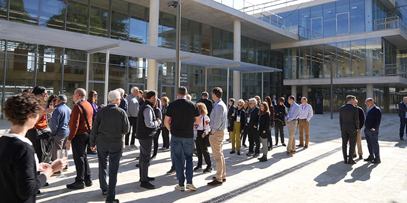
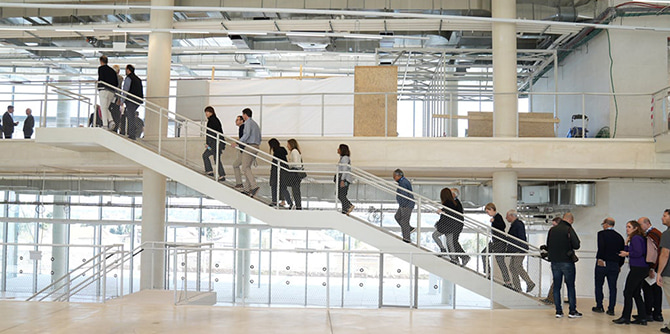
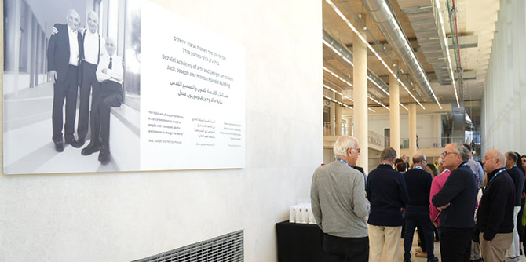

קמפוס ג'ק, ג'וזף ומורטון מנדל החדש (צילום: סימנים)
קמפוס ג'ק, ג'וזף ומורטון מנדל החדש ובניין בצלאל אקדמיה לאמנויות ועיצוב ירושלים נחנכו ב-10 בנובמבר 2022. קרן מנדל התורמת היא העיקרית לבניית הקמפוס החדש, והתרומה משקפת את מחויבותה לקידום האמנויות והמוסדות להשכלה גבוהה בישראל, ואת מחויבותה לעיר ירושלים.
הקמפוס החדשני ממוקם במרכז העיר, סמוך למגרש הרוסים, וישרת 2,500 סטודנטים ו-500 חברי סגל. המעבר של בצלאל מקמפוס הר הצופים, המרוחק ממרכז העיר, צפוי לשנות את מרכז העיר ירושלים ולהפוך אותו למוקד של חיי סטודנטים, וכן לחזק את בירת ישראל כמרכז לאומי ובינלאומי של תרבות ויצירה.
את הבניין, ששטחו 37,000, מ"ר תכנן משרד האדריכלים היפני הנודע SANAA, והוא יכיל סדנאות, כיתות, גלריות, אולפנים, משרדים, אולמות, ספרייה וקפיטריה. העיצוב השקוף של הבניין הוא מאפיין אדריכלי מרכזי, המשקף את הגישות הפדגוגיות החדשות של בצלאל ואת שאיפתו למלא תפקיד פעיל ומשמעותי בחיי העיר שבה הוא יושב משנת 1906. שקיפות זו יוצרת קווי ראייה ללא הפרעה ברחבי הבניין עצמו, וממנו אל הרחובות הסמוכים, באופן המעודד שיתופי פעולה אקדמיים חסרי תקדים, פעילויות בין-תחומיות וכן אינטראקציות בין תלמידי בצלאל לתושבי העיר. הבניין מזמין את תושבי ירושלים להציץ פנימה, לבקר בגלריות ובספרייה, להשתתף בכנסים ובאירועים ולהיות חלק מחיי היומיום של בצלאל.

בניין ג'ק, ג'וזף ומורטון מנדל החדש: מבט מבפנים (צילום: סימנים)
את טקס חנוכת הקמפוס כיבדו בנוכחותם
הנשיא יצחק הרצוג ורעייתו מיכל, ראש עיריית ירושלים
משה ליאון, נשיא בצלאל
פרופ' עדי שטרן, יו"ר הוועד המנהל של בצלאל
דן מרידור, שגריר יפן בישראל מר קויאצ'י אייבושי, שני נציגי הכנסייה הרוסית האורתודוקסית, נשיא קרן מנדל
פרופסור יהודה ריינהרץ ויו"ר קרן מנדל סטיב הופמן.
"אנחנו צופים שכאן, במרכז העיר ירושלים, ייווצר קמפוס עירוני שוקק שמהדהד בתכנונו את טשטוש הגבולות בין הפנים לחוץ, בין החדש לישן, בין האמנות לחיים בעיר", אמר פרופסור יהודה ריינהרץ בטקס. "הפדגוגיה של שץ מקבלת כאן את גילומה האולטימטיבי, ואנחנו בקרן מנדל גאים לתרום תרומה כה טרנספורמטיבית לעיר ולאמנות, ודרכה להיות חלק מן התנועה הזאת אל העתיד: עתידה של ירושלים ועתידה של האמנות הישראלית".
קמפוס ג'ק, ג'וזף ומורטון מנדל החדש יאפשר לאקדמיה הוותיקה בישראל להמשיך לעצב את עתיד האמנות, העיצוב והאדריכלות בישראל, בסביבתה ובחו"ל. שתי מחלקות יעברו לבניין החדש בינואר 2023, ושאר המחלקות צפויות לעבור בתחילת חודש מרס.
נאומו של פרופסור יהודה ריינהרץ בטקס חנוכת הקמפוס החדש >>

ביקור ועד המנהל של קרן מנדל בבניין החדש (צילום: סימנים)
{kind=link}
{kind=link}
{kind=link}